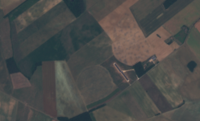
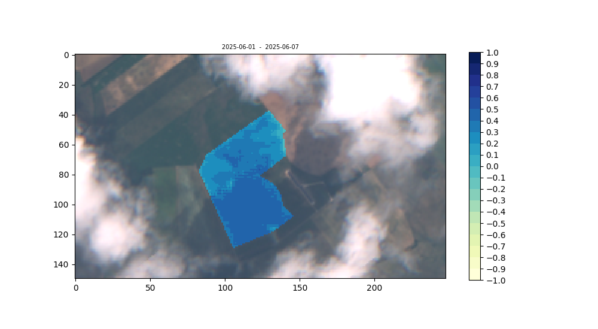
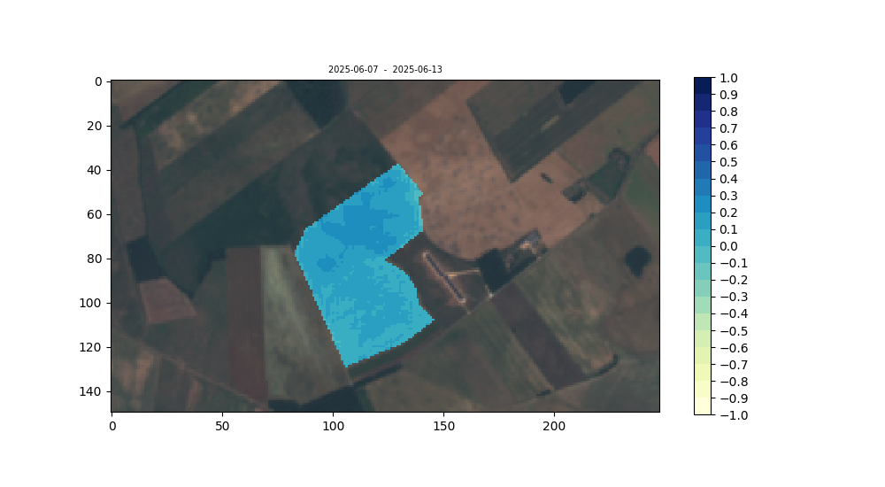
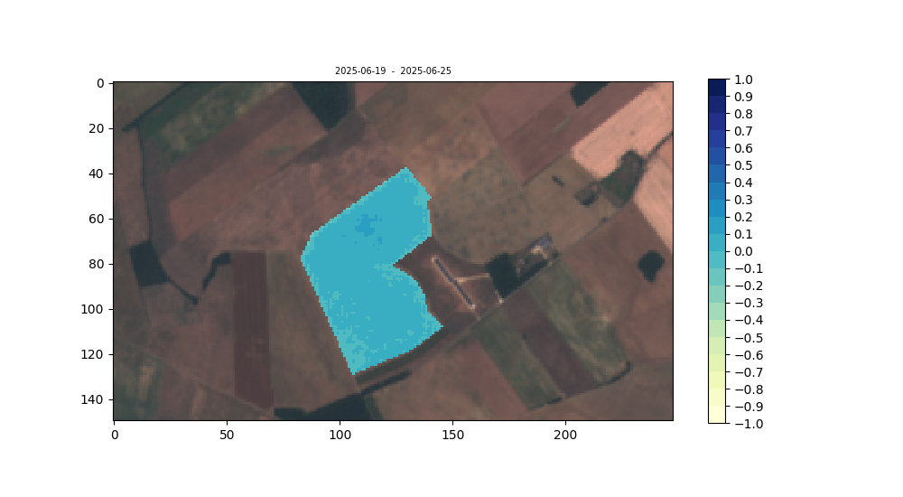
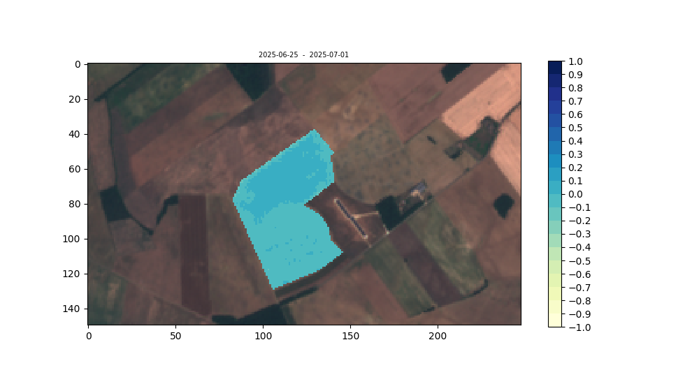
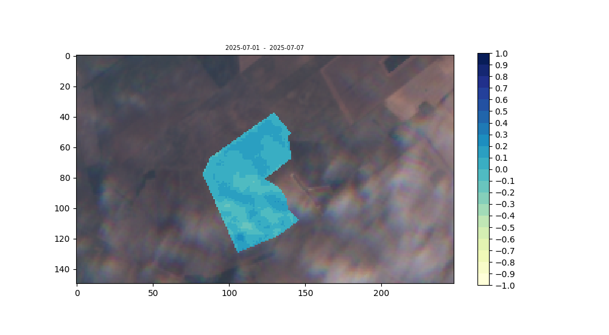
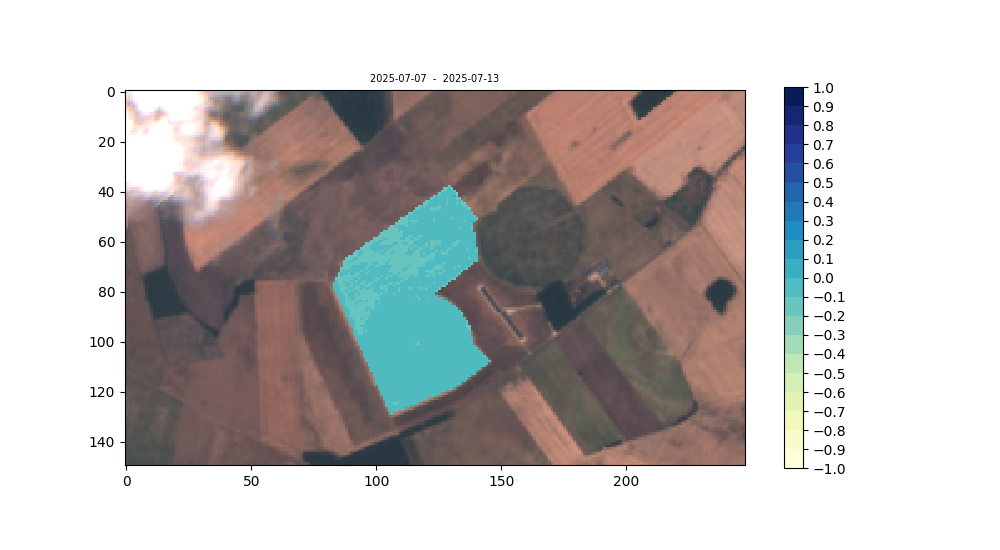
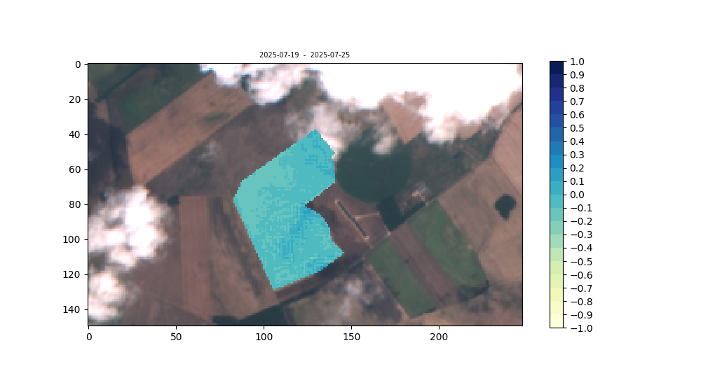

This project was conducted as a freelance initiative for the farm "EURL Des Bois Forts".
The objective is to measure the level of moisture present in crops and plot its
evolution to optimize irrigation by detecting early drought signs, mitigate
waterlogging and indicate where to start harvesting. This is achieved through the
use of Sentinel-2 optical satellite imagery, mapping a Normalized Difference Moisture
Index (NDMI) image to the bounds of a specific field within a true color image.
The NDMI is calculated as the normalized difference between Sentinel-2's B08
and B11 spectral bands, representing Near-Infrared (NIR) and Short-Wave Infrared (SWIR)
wavelengths. This combination removes variations induced by leaf internal structure
and leaf dry matter content, improving the accuracy in retrieving the vegetation water
content (Ceccato et al., 2001).
True Color View

Here is a true color image of the farm, using a combination of
Sentinel-2's B02, B03 and B04 bands. The crops cultivated in the
fields are predominantly rapeseed, sunflower & corn.
NDMI Temporal Analysis







The temporal analysis displays images of the farm
from 01/06/2025 to 31/07/2025 on a weekly basis.
Sentinel-2 revisit time is around 5 days for a given
location, thus about one image is taken per week -
if there are more the one with the lowest cloud cover
is selected. The NDMI is plotted within
a polygon representing two crop fields, one circular with
automatised irrigation typical of such fields
and one rectangular that may receive manned irrigation.
The NDMI works as a ratio ranging
from -1 (completely dry/no vegetation) to 1
(completely wet/drowned vegetation), represented
on the image as a color scale ranging from yellow to blue.
On 1st June we observe recent irrigation or rainfall as
the two observed fields are colored in darker shades of
blue (actual ratio values are ~ 0.3, meaning good
vegetation moisture content). As
time progresses, the hydration values decrease. It is
important to note that the moisture content appears
to decrease in inconsistent patterns over the fields,
indicating possible variations in topography. From an
economic standpoint, this is interesting as this
information can direct irrigation practices, saving
important costs and enabling better productivity. Limitations
to the reliability of this project appear in week 07-01 - 07-07,
where clouds are obstructing the image and corrupt the NDMI values.